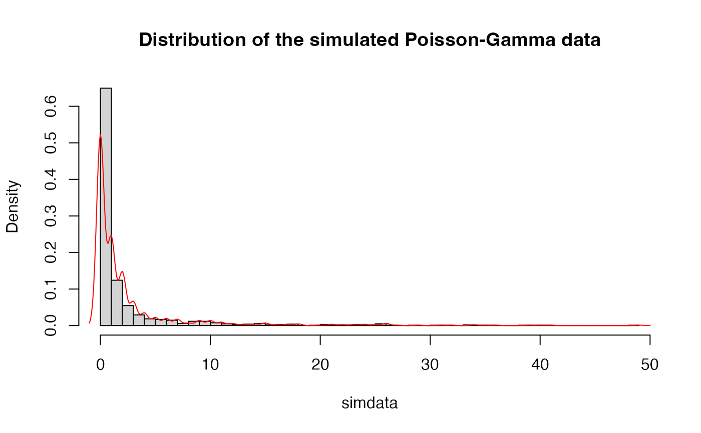

MCMC Simulation of a Hidden Markov Gamma-Poisson Model
Source:R/MCMC_poisson.R
hmm_mcmc_gamma_poisson.RdMCMC Simulation of a Hidden Markov Gamma-Poisson Model
Usage
hmm_mcmc_gamma_poisson(
data,
prior_T,
prior_betas,
prior_alpha = 1,
iter = 1500,
warmup = floor(iter/1.5),
thin = 1,
seed = sample.int(.Machine$integer.max, 1),
init_T = NULL,
init_betas = NULL,
init_alpha = NULL,
print_params = TRUE,
verbose = TRUE
)Arguments
- data
(numeric) data
- prior_T
(matrix) prior transition matrix
- prior_betas
(numeric) prior beta parameters
- prior_alpha
(numeric) a single prior alpha parameter. By default,
prior_alpha=1- iter
(integer) number of MCMC iterations
- warmup
(integer) number of warmup iterations
- thin
(integer) thinning parameter. By default,
1- seed
(integer) seed parameter
- init_T
(matrix)
optional parameter; initial transition matrix- init_betas
(numeric)
optional parameter; initial beta parameters- init_alpha
(numeric)
optional parameter; initial alpha parameter- print_params
(logical)
optional parameter; print estimated parameters every iteration. By default,TRUE- verbose
(logical)
optional parameter; print additional messages. By default,TRUE
Value
List with following elements:
data: data used for simulation
samples: list with samples
estimates: list with various estimates
idx: indices with iterations after the warmup period
priors: prior parameters
inits: initial parameters
last_iter: list with samples from the last MCMC iteration
info: list with various meta information about the object
Examples
# Simulate Poisson-Gamma data
N <- 2^10
true_T <- rbind(c(0.95, 0.05, 0),
c(0.025, 0.95, 0.025),
c(0.0, 0.05, 0.95))
true_betas <- c(2, 1, 0.1)
true_alpha <- 1
simdata_full <- hmm_simulate_gamma_poisson_data(L = N,
mat_T = true_T,
betas = true_betas,
alpha = true_alpha)
simdata <- simdata_full$data
hist(simdata, breaks = 40, probability = TRUE,
main = "Distribution of the simulated Poisson-Gamma data")
lines(density(simdata), col = "red")

# Set numbers of states to be inferred
n_states_inferred <- 3
# Set priors
prior_T <- generate_random_T(n_states_inferred)
prior_betas <- c(1, 0.5, 0.1)
prior_alpha <- 3
# Simmulation settings
iter <- 50
warmup <- floor(iter / 5) # 20 percent
thin <- 1
seed <- sample.int(10000, 1)
print_params <- FALSE # if TRUE then parameters are printed in each iteration
verbose <- FALSE # if TRUE then the state of the simulation is printed
# Run MCMC sampler
res <- hmm_mcmc_gamma_poisson(data = simdata,
prior_T = prior_T,
prior_betas = prior_betas,
prior_alpha = prior_alpha,
iter = iter,
warmup = warmup,
thin = thin,
seed = seed,
print_params = print_params,
verbose = verbose)
res
#> Model: HMM Gamma-Poisson
#> Type: MCMC
#> Iter: 50
#> Warmup: 10
#> Thin: 1
#> States: 3
summary(res)# summary output can be also assigned to a variable
#> Estimated betas:
#> beta[1] beta[2] beta[3]
#> 1.9863995 0.5998843 0.1077967
#>
#> Estimated alpha:
#> 1.606705
#>
#> Estimated means:
#> 0.8128926 3.070639 15.08416
#>
#> Estimated transition rates:
#> 1 2 3
#> 1 0.97528835 0.02471165 0.0000000
#> 2 0.08935739 0.52378783 0.3868548
#> 3 0.00000000 0.31054655 0.6894535
#>
#> Assigned states:
#> 1 2 3
#> 653 178 193
#>
#> Approximate Kullback-Leibler divergence:
#> 0.2644856
#>
#> Log Likelihood:
#> mean sd median
#> -2171.088586 7.149527 -2170.790375
#>
#> Significance of Difference between Rates (stepwise):
#> [1] 1.354721e-48 0.000000e+00
#>
coef(res) # extract model estimates
#> $betas
#> beta[1] beta[2] beta[3]
#> 1.9863995 0.5998843 0.1077967
#>
#> $alpha
#> [1] 1.606705
#>
#> $means
#> means[1] means[2] means[3]
#> 0.8128926 3.0706386 15.0841595
#>
#> $mat_T
#> [,1] [,2] [,3]
#> [1,] 0.97528835 0.02471165 0.0000000
#> [2,] 0.08935739 0.52378783 0.3868548
#> [3,] 0.00000000 0.31054655 0.6894535
#>
# plot(res) # MCMC diagnostics